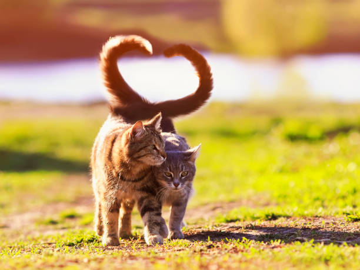
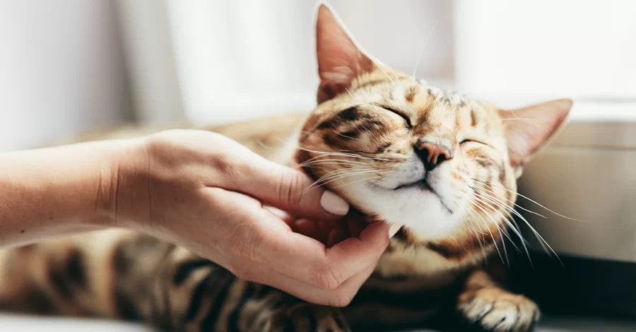
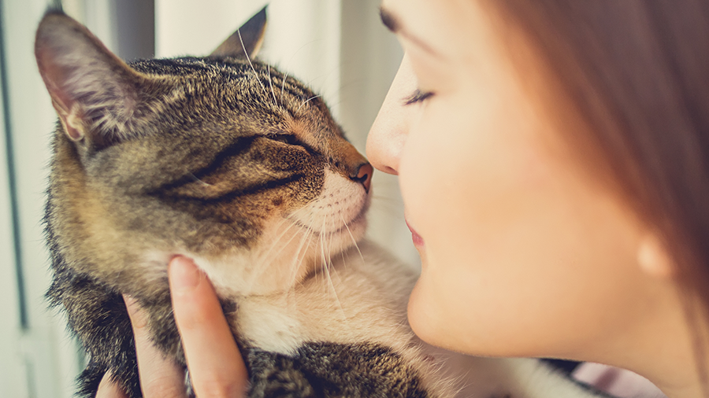
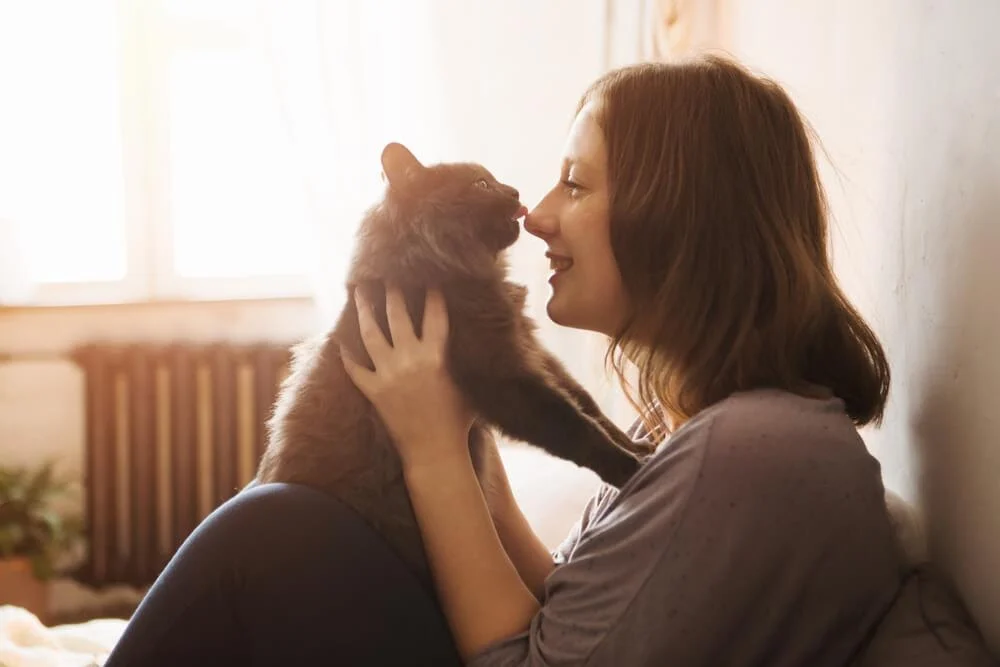
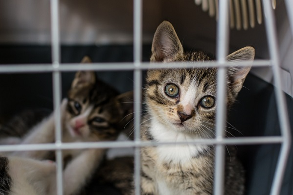

Mais que pets,
companheiros de vida...
"Acreditamos que todo gato merece um lar e todo humano merece o carinho de um felino. Aqui, você aprende, cuida e monitora a felicidade do seu companheiro."


Mais que pets,
companheiros de vida...

Você sabia que o ronronar de um gato vibra entre 25 e 150 Hertz? Estudos mostram que essa frequência sonora pode auxiliar na regeneração de tecidos humanos, reduzir a pressão arterial e diminuir o risco de ataques cardíacos em até 40%. Ter um gato não é apenas companhia, é um investimento na sua saúde.

Já percebeu seu gato olhando para você e piscando bem devagar? Na psicologia felina, isso é conhecido como 'Slow Blink'. É a maior prova de confiança que eles podem dar. Tente retribuir o gesto: pisque devagar para o seu amigo e veja como a conexão entre vocês aumenta instantaneamente.

Diferente dos cães, os gatos valorizam o espaço pessoal. Eles demonstram afeto de formas sutis: encostando a cabeça em você (troca de feromônios), seguindo você pelos cômodos ou 'amassando pãozinho' no seu colo. Entender esses sinais é a chave para uma amizade profunda e respeitosa.

Viver com um gato estimula a produção de ocitocina (o hormônio do amor) e serotonina no cérebro humano. Para quem sofre de ansiedade ou depressão, ter uma rotina de cuidados com um pet traz propósito e um senso de segurança emocional incomparável.
A ciência prova, mas e você? O quanto seu gatinho muda o seu humor?
Participe da nossa pesquisa abaixo!
Em uma escala de 1 a 5, qual o seu nível de felicidade depois de brincar com seu gatinho?
Existem milhares de ronrons esperando por um lar. O próximo pode ser o seu!
Ao escolher a adoção, você não está apenas ganhando um amigo; você está combatendo o abandono e abrindo espaço em abrigos para que outros animais possam ser salvos. Gatos de abrigo, muitas vezes, carregam uma gratidão silenciosa que se transforma no vínculo mais forte que você já experimentou. Adotar é um ato de resistência contra o descaso e um passo gigante em direção a uma sociedade mais empática.

Ter um gato oferece diversos benefícios para a saúde física e mental, incluindo a redução do estresse...
A minha rotina mudou completamente depois que adotei o Mingau. Ele ronrona toda vez que chego!